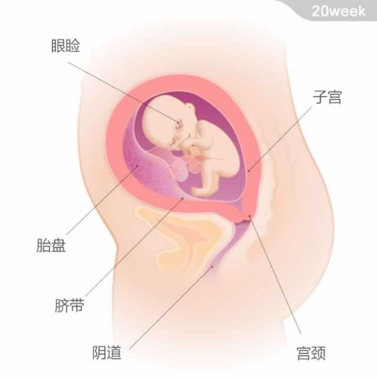

 宝宝大约重300克，从头部到臀部的长度约为16厘米。 现在，宝宝的眼眉、眼睑都已经发育完成。舌上的味蕾已经形成，因为脑部和神经末端的发育，也有了触觉。如果是女宝宝，她的阴道已经形成并继续发育。消化系统更加健全了，肾脏接管了产生羊水的工作，可以帮助清除血液中的废物并过滤尿液。 肚子里的宝宝与前一周相比更加活跃，每小时的胎动甚至能达到50次，尤其你休息时胎动会更加明显。宝宝能听到你的声音，你可以通过说话、唱歌和大声朗读来和他交流。